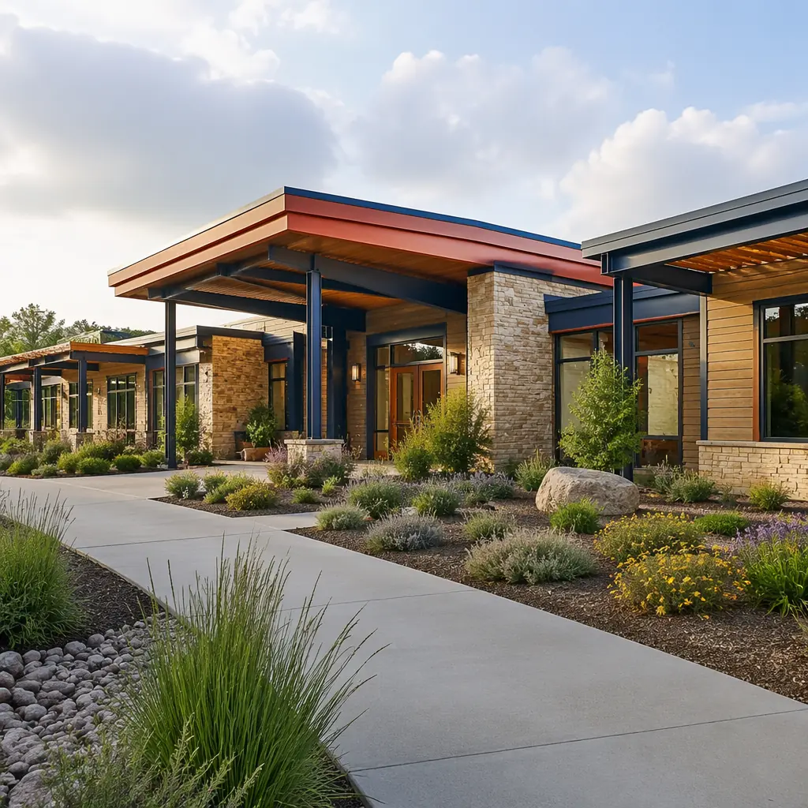
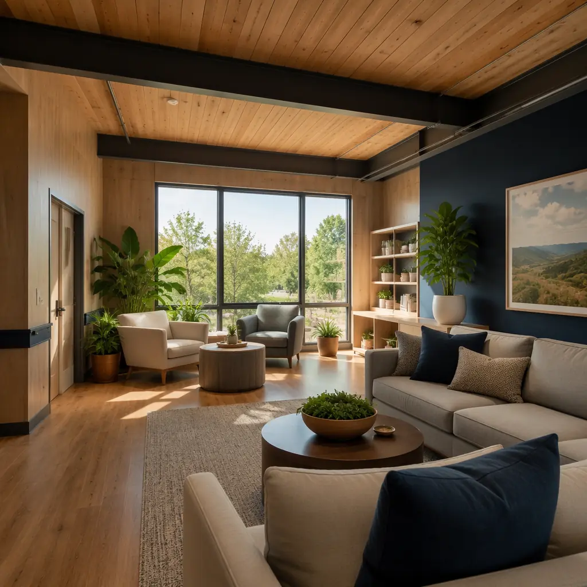
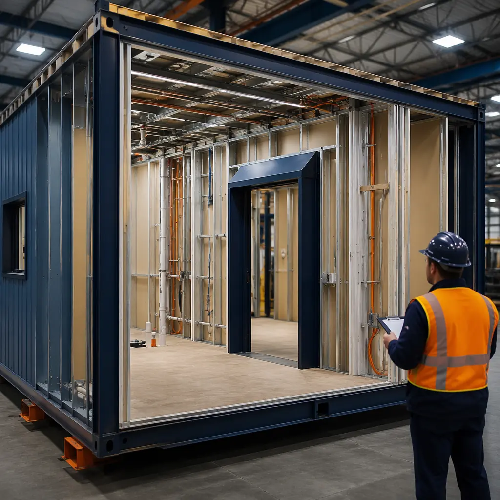
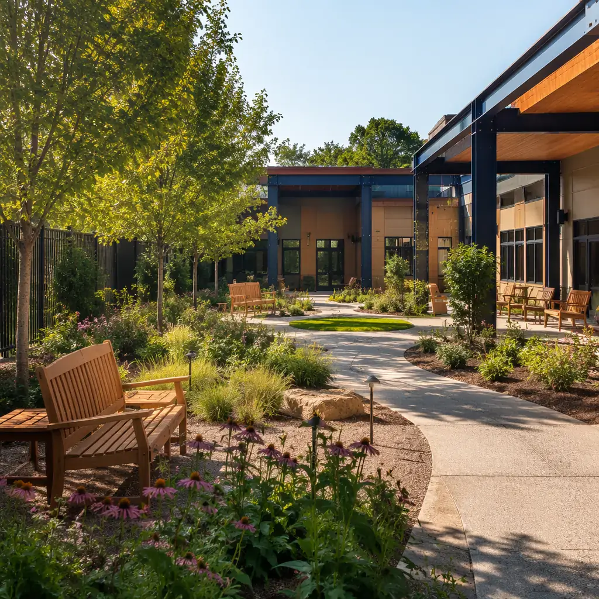
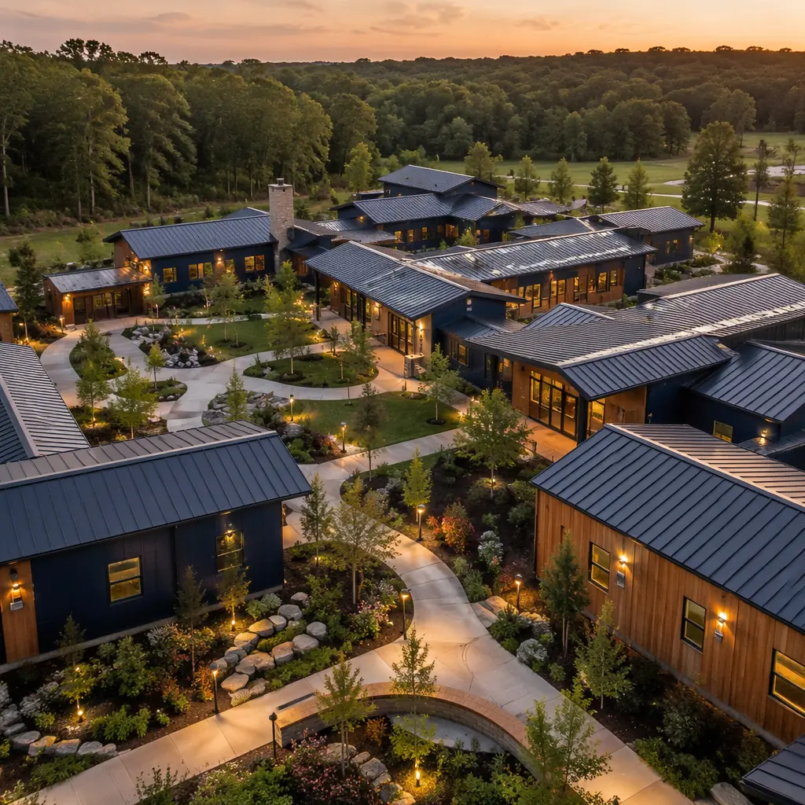

Behavioral health construction is among the most demanding building typologies in healthcare. A psychiatric unit or addiction treatment center must simultaneously satisfy anti-ligature safety standards, therapeutic design principles, fire-rated compartmentation, and strict privacy regulations — all while delivering a non-institutional environment that supports recovery. Traditional construction of these facilities typically requires 18–24 months from groundbreaking to occupancy, during which the community lacks essential mental health beds. Modular construction compresses this timeline to 10–14 months while achieving higher quality control on safety-critical details that site labor struggles to execute consistently.

Why Modular Construction Fits Behavioral Health Facilities
Behavioral health construction imposes requirements that align unusually well with factory-built methods. The five characteristics that make modular the preferred delivery model for these facilities are not shared by general healthcare construction — they are specific to psychiatric, addiction treatment, and rehabilitation environments:
- Anti-Ligature Standards Require Precision. Every fixture, door handle, hinge, shower head, hook, and grille in a behavioral health unit must be anti-ligature — designed so that nothing can support a ligature point capable of bearing 45 kg (100 lbs). This means zero-exposure fasteners, sloped surfaces on door tops, breakaway curtain rods, and recessed plumbing fixtures. A single missed detail creates a safety hazard. In a factory environment, anti-ligature installation is performed by the same specialized crew on every module, following a controlled checklist. On a traditional site, different subcontractors install doors, plumbing, and hardware across multiple weeks, and consistency degrades. MODURA's factory quality system tracks each anti-ligature point with photographic documentation, creating a permanent record that satisfies Joint Commission and CMS survey requirements.
- Sound Isolation Demands Factory Precision. Behavioral health patients are acutely sensitive to noise — footsteps from the floor above, plumbing sounds through walls, HVAC rumble. Modular construction inherently double-isolates each room: every module has its own floor, ceiling, and wall assemblies, creating an acoustic break between adjacent units that a site-built demising wall cannot match. Published STC ratings for modular healthcare units consistently measure 5–8 points higher than identical site-built wall assemblies because flanking paths through continuous floor slabs are eliminated. For behavioral health, where noise complaints are among the most frequent patient grievances, this is a measurable therapeutic advantage.
- Phased Occupancy Enables Early Revenue. A 60-bed addiction treatment center built traditionally requires the entire building envelope to be complete before any interior work can be occupied — 18 months of zero revenue. Modular construction allows phased delivery: the first 20-bed wing can open while the remaining modules are still in factory production. A facility that begins admitting patients 8 months earlier generates approximately $1.2–$1.8 million in additional first-year revenue for a typical 60-bed center charging $500–$700/day.
- Infection Control During Construction. Renovating or expanding a behavioral health facility while existing units remain occupied creates dust, noise, and disruption that directly harm therapeutic outcomes. Modular construction moves 70–80% of labor hours off-site, reducing on-site construction activity to foundation work and module setting — typically 4–8 weeks of active site work versus 12–18 months for traditional construction. The existing facility can continue operations with minimal disruption.
- Regulatory Inspection Streamlining. Because modules arrive with interior finishes, MEP systems, and safety fixtures already installed and inspected at the factory, the on-site inspection burden is significantly reduced. State health department and fire marshal reviews can be conducted at the factory during production rather than sequentially on-site, cutting the post-construction regulatory approval period from 6–10 weeks to 2–4 weeks.

Anti-Ligature Design — The Safety Standard That Modular Construction Serves Best
Anti-ligature design is not a single product specification — it is a systematic approach to eliminating any architectural feature that could be used as an anchor point for self-harm. The Joint Commission identifies ligature risks as the most common physical environment finding in behavioral health surveys, and the Centers for Medicare & Medicaid Services (CMS) issued a 2019 memorandum requiring all psychiatric hospitals to identify and mitigate ligature risks throughout patient-accessible areas.
The key anti-ligature elements that modular factory construction executes with higher consistency than site-built methods include:
| Anti-Ligature Element | Site-Built Common Failure | Modular Factory Control |
|---|---|---|
| Door tops & hardware | Standard hinges used by framing sub; gaps above door exceed 4mm | Factory-installed continuous geared hinges, sloped door tops, anti-ligature lever handles with clutch mechanism |
| Plumbing fixtures | Standard exposed shower heads, faucets with protruding handles | Recessed shower heads with breakaway escutcheons, tamper-resistant faucets tested to 45 kg load |
| Ceiling fixtures | Standard drop ceiling with accessible grid, exposed sprinkler heads | Solid gypsum ceiling with tamper-resistant access panels, concealed institutional-grade sprinklers |
| Window systems | Operable windows with exposed hardware, standard glass | Laminated safety glazing with polycarbonate interlayer, tamper-proof operators, factory-sealed units |
| Closet & storage | Standard closet rods, exposed shelf brackets | Breakaway closet rods designed to collapse under 18 kg load, recessed shelving with no exposed hardware |
Each of these elements must be installed correctly on every patient-accessible surface in the facility. A single standard door hinge installed by a framing subcontractor who was not briefed on behavioral health requirements creates a ligature point. Modular construction eliminates this risk by moving all interior finish work into a controlled factory environment where anti-ligature installation is the only standard — there is no "standard" hardware in the factory inventory to accidentally substitute.
The difference between a site-built behavioral health unit and a modular one is not the specification — the written spec is identical. The difference is that in a factory, the person installing the door hardware has installed anti-ligature hardware on 500 doors before this one. On a construction site, they might have installed five. Consistency is a function of repetition, and repetition is what factories provide.

Cost Structure for Modular Behavioral Health Facilities
Behavioral health construction costs in 2026 range from $320 to $480 per square foot for turnkey modular delivery, compared to $350–$520 per square foot for traditional construction of equivalent specification. The range reflects differences in security level (voluntary outpatient versus locked psychiatric intensive care), MEP density (medical gas piping for detox units adds $25–$40/sq ft), and finish level (residential-appearing therapeutic environments cost more than institutional finishes). The following breakdown is based on MODURA project data from behavioral health facilities delivered across North America:
| Cost Component | Traditional Build | Modular Build | Modular Advantage |
|---|---|---|---|
| Hard construction ($/sq ft, 40,000 sq ft facility) | $380 | $350 | −$1.2M |
| Anti-ligature change orders (site rework) | $180k–$350k | $0–$40k | −$180k+ |
| Construction financing (18 vs 12 months) | $1.12M | $747k | −$373k |
| Early revenue (6 months at 60% occupancy) | — | +$2.3M | Revenue gain |
| Infection control during construction | $120k–$200k | $40k–$80k | −$80k+ |
| Net Project Advantage | — | ~$4.1M | Including revenue acceleration |
The $4.1 million advantage includes both hard-cost savings ($1.8M) and revenue acceleration ($2.3M). For a healthcare system evaluating the business case, the revenue acceleration from 6 months of early occupancy is typically the decisive factor — it more than recovers any modular premium within the first year of operation. This aligns with the broader pattern documented in our modular construction ROI analysis.
Therapeutic Design Principles Integrated with Modular Delivery
Behavioral health facilities are held to design standards that general medical buildings are not. The Design Guide for the Built Environment of Behavioral Health Facilities (Facility Guidelines Institute, 2022 edition) and the SAMHSA guidelines on trauma-informed design specify environmental features that modular construction can deliver with higher fidelity because they are integrated during factory production rather than value-engineered out during site construction:
- Access to Nature. Every patient room and group therapy space should have a view of nature — not a parking lot or corridor. Modular construction allows window placement to be verified and adjusted during factory assembly when the module is accessible from all sides. On a traditional site, the window sub arrives months after framing, and any misalignment with the landscape design is too late to correct. MODURA's module design standardizes window openings at 1,200mm x 1,500mm (47" x 59") for patient rooms, exceeding the FGI minimum of 8% of floor area for glazing.
- Residential Scale. Behavioral health facilities should feel like homes, not hospitals. Corridor widths over 8 feet, ceiling heights over 10 feet, and institutional color palettes create an environment that patients perceive as custodial rather than therapeutic. Modular construction naturally enforces residential proportions because modules are typically 12–14 feet wide — a dimension that produces room sizes and corridor widths appropriate for healing environments. The 14-foot module width delivers an 8-foot corridor with two 12-foot-wide patient rooms, proportions that the FGI behavioral health guidelines specifically endorse.
- Biophilic Materials. Wood-look finishes, natural stone textures, and views to landscaped courtyards are not optional amenities in behavioral health design — they are therapeutic tools with measurable impact on patient outcomes. A 2021 study published in the Journal of Psychiatric Research found that patients in rooms with wood-grain finishes and nature views reported 23% lower perceived stress scores and required 17% fewer PRN (as-needed) anxiety medications than patients in standard institutional rooms. Modular factory production makes biophilic material installation cost-effective because the same craftspeople install them across every module, eliminating the premium that a site subcontractor would charge for a non-standard finish.

Project Types — What Modular Behavioral Health Construction Covers
MODURA's behavioral health portfolio spans four facility types, each with distinct design requirements that modular construction addresses differently:
Inpatient Psychiatric Hospitals (30–120 beds). The most demanding behavioral health typology, requiring locked units, seclusion rooms, continuous patient observation, and full anti-ligature throughout. Typical project: 45,000–80,000 sq ft, 10–14 month modular schedule versus 18–24 months traditional. These facilities often serve as the psychiatric wing of a larger modular hospital campus, where the modular psychiatric unit can be delivered as a connected but independently constructed building.
Residential Addiction Treatment Centers (20–80 beds). For a deeper look, our modular physical therapy & rehab clinics… guide covers the details. Less medically intensive than psychiatric hospitals but requiring 24/7 staffing, medication storage, group therapy spaces, and detox-capable rooms with medical gas rough-in. The residential character is essential — patients typically stay 30–90 days, and the environment must support long-term recovery rather than acute stabilization. Modular construction at 30–60 beds can be delivered in 8–12 months.
Outpatient Behavioral Health Clinics (5,000–20,000 sq ft). Individual and group therapy offices, medication management rooms, intake and assessment spaces. These facilities function more like modular outpatient medical clinics with the addition of behavioral-health-specific safety features. Modular delivery in 4–7 months for a 10,000 sq ft clinic.
Crisis Stabilization Units (8–16 beds). Short-term (23-hour to 72-hour) observation and stabilization facilities that serve as alternatives to emergency department boarding for psychiatric patients. These are typically deployed as stand-alone facilities or attached to existing hospitals. Modular delivery in 5–8 months makes crisis units viable for communities that cannot wait 2+ years for a traditional build. This rapid deployment model parallels the speed advantage documented in modular healthcare construction more broadly.
